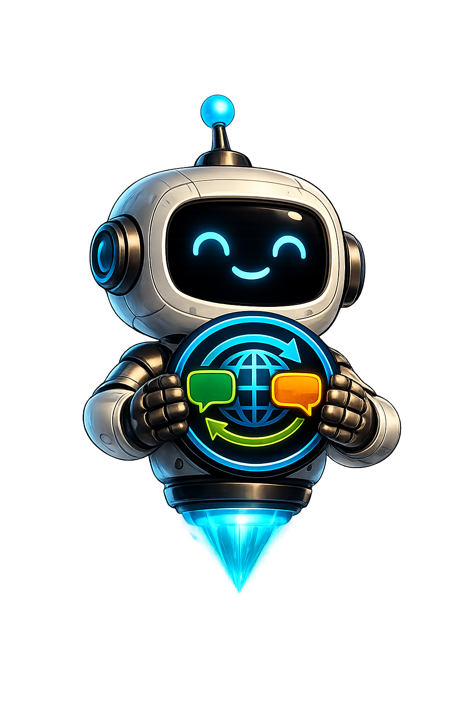

Community / Media
Localization
Plan game translation, language coverage, contributor review and localization readiness. Status = Planning.

Localization Placeholder
Status = Planning. No translation functionality is implemented yet.
PlanningStatus
PlaceholderImplementation
CommunityTheme